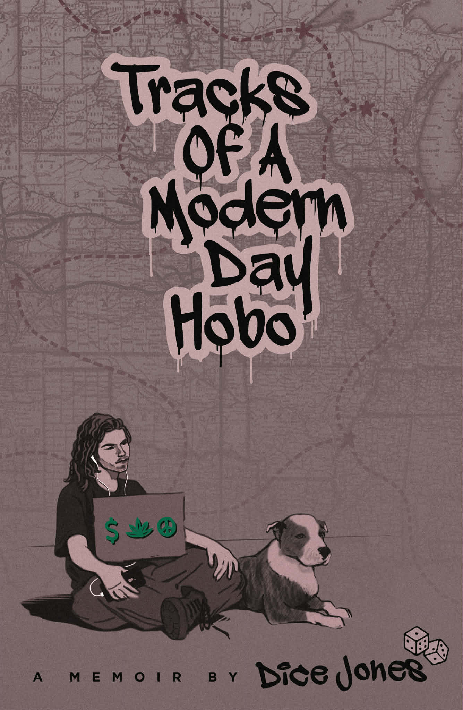

Tracks of a Modern-Day Hobo
Tracks of a Modern-Day Hobo is a raw, unfiltered memoir
Want a copy? Create an account and then purchase.
Create accountAbout the book
Tracks of a Modern-Day Hobo is a raw, unfiltered memoir of a man who lived on the fringes, riding freight trains, hitchhiking highways, surviving brutal injuries, and somehow finding hope through it all. Dice Jones wasn’t born to stay still. Raised in chaos, forged in the fires of group homes, train yards, and back-alley survival, he found freedom the only way he knew how, by running head first into the unknown. Told with brutal honesty and unexpected beauty, this memoir rips through addiction, heartbreak, street violence, and near-death experiences including the one that left him mangled beneath a moving train. This isn’t a story about giving up. It’s about getting up again, and again, and again. .. From Rainbow Gatherings to a near-fatal accident , This isn’t a tale of redemption. It’s a story of resilience, freedom, and the will to keep moving forward, even with one hand missing and the odds stacked sky high. Tracks of a Modern-Day Hobo isn’t your average memoir. If you’ve ever felt like you didn’t belong, if you’ve ever had to fight just to stay alive this one’s for you .